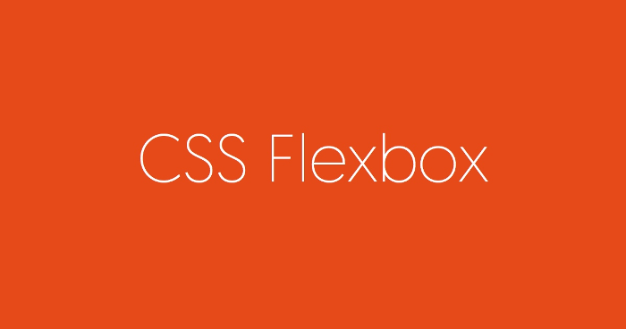
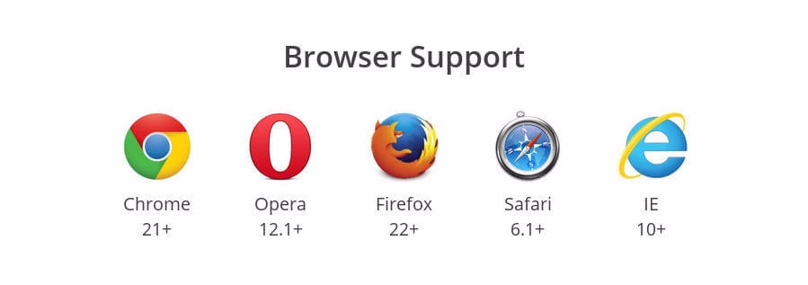

Flex 布局教程：语法篇 6 6
作者： 阮一峰
日期： 2015年7月10日
display: -webkit-box;
display: -ms-flexbox;
display: flex;
网页布局（layout）是 CSS 的一个重点应用。
_files/bg2015071001.gif)

2009年，W3C 提出了一种新的方案----Flex 布局，可以简便、完整、响应式地实现各种页面布局。目前，它已经得到了所有浏览器的支持，这意味着，现在就能很安全地使用这项功能。

一、Flex 布局是什么？
Flex 是 Flexible Box 的缩写，意为"弹性布局"，用来为盒状模型提供最大的灵活性。
任何一个容器都可以指定为 Flex 布局。
.box{display: flex;}
行内元素也可以使用 Flex 布局。
.box{display: inline-flex;}
Webkit 内核的浏览器，必须加上-webkit前缀。
.box{display: -webkit-flex; /* Safari */display: flex;}
注意，设为 Flex 布局以后，子元素的float、clear和vertical-align属性将失效。
二、基本概念
采用 Flex 布局的元素，称为 Flex 容器（flex container），简称"容器"。它的所有子元素自动成为容器成员，称为 Flex 项目（flex item），简称"项目"。
_files/Image [1].png)
容器默认存在两根轴：水平的主轴（main axis）和垂直的交叉轴（cross axis）。主轴的开始位置（与边框的交叉点）叫做main start，结束位置叫做main end；交叉轴的开始位置叫做cross start，结束位置叫做cross end。
项目默认沿主轴排列。单个项目占据的主轴空间叫做main size，占据的交叉轴空间叫做cross size。
三、容器的属性
以下6个属性设置在容器上。
3.1 flex-direction属性
flex-direction属性决定主轴的方向（即项目的排列方向）。
.box {flex-direction: row | row-reverse | column | column-reverse;}
_files/Image [2].png)
它可能有4个值。
3.2 flex-wrap属性
默认情况下，项目都排在一条线（又称"轴线"）上。flex-wrap属性定义，如果一条轴线排不下，如何换行。
_files/Image [3].png)
.box{flex-wrap: nowrap | wrap | wrap-reverse;}
它可能取三个值。
（1）nowrap（默认）：不换行。
_files/Image [4].png)
（2）wrap：换行，第一行在上方。
_files/Image [1].jpg)
（3）wrap-reverse：换行，第一行在下方。
_files/Image [2].jpg)
3.3 flex-flow
flex-flow属性是flex-direction属性和flex-wrap属性的简写形式，默认值为row nowrap。
.box {flex-flow: <flex-direction> || <flex-wrap>;}
3.4 justify-content属性
justify-content属性定义了项目在主轴上的对齐方式。
.box {justify-content: flex-start | flex-end | center | space-between | space-around; space-evenly}
_files/Image [5].png)
_files/Image [6].png)
它可能取5个值，具体对齐方式与轴的方向有关。下面假设主轴为从左到右。
3.5 align-items属性
align-items属性定义项目在交叉轴上如何对齐。
.box {align-items: flex-start | flex-end | center | baseline | stretch;}
_files/Image [7].png)
它可能取5个值。具体的对齐方式与交叉轴的方向有关，下面假设交叉轴从上到下。
3.6 align-content属性
align-content属性定义了多根轴线的对齐方式。如果项目只有一根轴线，该属性不起作用。
.box {align-content: flex-start | flex-end | center | space-between | space-around | stretch;}
_files/Image [8].png)
该属性可能取6个值。
四、项目的属性
以下6个属性设置在项目上。
4.1 order属性
order属性定义项目的排列顺序。数值越小，排列越靠前，默认为0。
.item {order: <integer>;}
_files/Image [9].png)
4.2 flex-grow属性
flex-grow属性定义项目的放大比例，默认为0，即如果存在剩余空间，也不放大。
.item {flex-grow: <number>; /* default 0 */}
_files/Image [10].png)
如果所有项目的flex-grow属性都为1，则它们将等分剩余空间（如果有的话）。如果一个项目的flex-grow属性为2，其他项目都为1，则前者占据的剩余空间将比其他项多一倍。
4.3 flex-shrink属性(睡克)
flex-shrink属性定义了项目的缩小比例，默认为1，即如果空间不足，该项目将缩小。
.item {flex-shrink: <number>; /* default 1 */}
_files/Image [3].jpg)
如果所有项目的flex-shrink属性都为1，当空间不足时，都将等比例缩小。如果一个项目的flex-shrink属性为0，其他项目都为1，则空间不足时，前者不缩小。
负值对该属性无效。
4.4 flex-basis属性
flex-basis属性定义了在分配多余空间之前，项目占据的主轴空间（main size）。浏览器根据这个属性，计算主轴是否有多余空间。它的默认值为auto，即项目的本来大小。
.item {flex-basis: <length> | auto; /* default auto */}
它可以设为跟width或height属性一样的值（比如350px），则项目将占据固定空间。
4.5 flex属性
flex属性是flex-grow, flex-shrink 和 flex-basis的简写，默认值为0 1 auto。后两个属性可选。
.item {flex: none | [ <'flex-grow'> <'flex-shrink'>? || <'flex-basis'> ]}
该属性有两个快捷值：auto (1 1 auto) 和 none (0 0 auto)。
建议优先使用这个属性，而不是单独写三个分离的属性，因为浏览器会推算相关值。
4.6 align-self属性
align-self属性允许单个项目有与其他项目不一样的对齐方式，可覆盖align-items属性。默认值为auto，表示继承父元素的align-items属性，如果没有父元素，则等同于stretch。
.item {align-self: auto | flex-start | flex-end | center | baseline | stretch;}
_files/Image [11].png)
该属性可能取6个值，除了auto，其他都与align-items属性完全一致。
（完）
文档信息
- 发表日期： 2015年7月10日